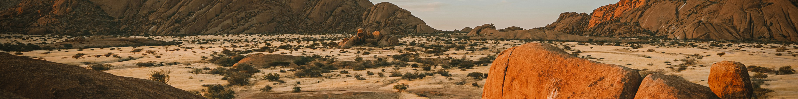
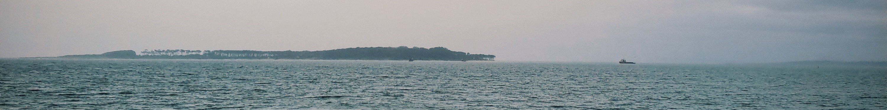
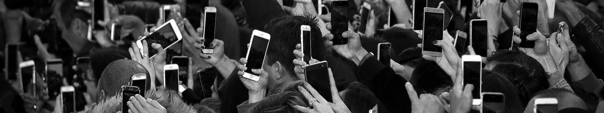
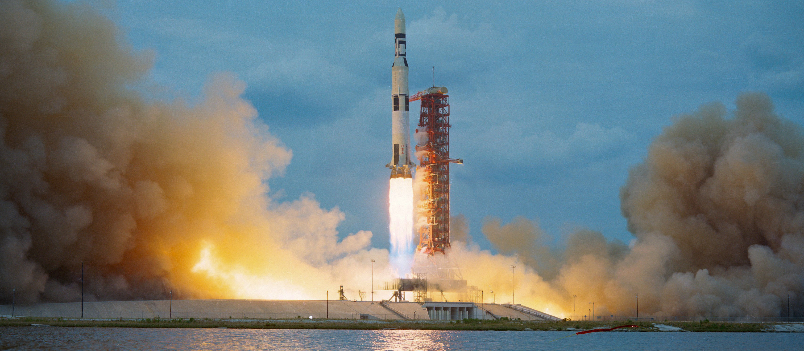

Koyaanisqatsi is a 90-minute experimental documentary structured in 13 thematic sections that explores the relationship between cultural elements of earth such as; technology, industry, and the natural world. The continuous visual composition is paired alongside Philip Glass’ minimalist score rather than dialogue or a traditional narrative. Translating to “life out of balance” in the Hopi language, Koyaanisqatsi contrasts landscapes, cities, infrastructure, consumption, and technological progression to dissect environmental imbalance and the accelerating pace of modern life. Through a combination of time-lapse photography, slow motion, rapid visual rhythms, and contrasting imagery, it produces a confronting and meditative reflection on progress, human systems, and the tension between nature and civilisation, encouraging the audience to consider the evolving place of humanity within an increasingly engineered existence. The website you are currently reading is a contemporary reissuing of Koyaanisqatsi.
[1]
Short form domination or
Dominant culture?
Contemporary human culture is increasingly moulded by the pervasive dominance of short-form media, where attention has been commodified and transformed into a battleground of screen timers and dopamine detoxing. Across social media, the act of scrolling has become an embedded ritual of daily life, a monotonous cycle where individuals consume vast quantities of information yet retain hardly any of it - a form of engagement defined not by reflection but rather, by reaction. Algorithms grow increasingly effective at maximising engagement at the expense of the user, stimulating dopamine release and encouraging habitual consumption, where many users find themselves returning to platforms not out of intention, but out of compulsion.
In an environment that favours speed over depth and immediacy over contemplation, complex ideas cannot exist beyond a compressed form of digestible fragments, drip-fed to us to keep us hooked. In this cultural landscape, identity, opinion and information are often experienced through rapidly shifting content that encourages perpetual movement rather than thoughtful permanence. The consequence is a society that is more connected than ever before, yet frequently distracted and distant, where the value of an experience is often measured by its engagement online rather than by its engagement of the soul.
[2]
Blueprints &


Biospheres
[The ocean remains indifferent to our ambition]
[The city shines brighter than the stars]
[Silence survives where civilisation fades]
The relationship between the built environment and the natural environment is one of the defining tensions of contemporary society, as the pursuit of development continues to reshape landscapes on an unprecedented scale. Expanding cities, transportation networks, industrial facilities and residential developments reflect humanity’s capacity to transform the physical world. Despite this, these achievements often come at the price of significant environmental damage as deforestation, animal displacement and resource extraction, have become increasingly visible consequences of ongoing expansion, altering ecosystems, biodiversity and ecological stability. In response, the sustainability movement has emerged as a pivotal concern within public discourse and policy, reflecting the growing advocation for economic growth to coexist with environmental stewardship rather than compete with it.
Concepts such as renewable energy, green infrastructure, and sustainable design are positive steps towards reducing humanity’s environmental footprint, however despite this, the scale and pace of development continue to surpass its efforts. While contemporary culture continues to celebrates innovation and expansion as an indication of progress, the consequences of these processes remain equally noteworthy, but for all the wrong reasons. As skylines rise and human influence extends, earth’s environment becomes increasingly forced into negotiation with the built world, establishing a complex relationship underscored by dependence, disruption, adaptation and consequence.
[3]
Artificial Intelligence,
Organic absence

Artificial intelligence has rapidly embedded its presence within modern life, influencing communication, work, learning, and accessing information. Tools like ChatGPT and Claude have transformed everyday interactions with technology, offering instant responses, creative assistance, and problem-solving capabilities that were once limited to people in specialised fields. As these AI systems become increasingly integrated into human culture, they reshape expectations around productivity, knowledge and convenience, with their ability to generate increasingly complex forms of content, blurring the distinction between human and artificially produced work.
This raises questions and challenges surrounding authenticity, creativity, and intellectual ownership. Simultaneously, the widespread adoption of artificial intelligence has also generated concerns about misinformation, algorithmic bias, privacy, and the displacement of human labour, with the prospect of machines replacing human expertise prompting ongoing debates about the future of workers and the value of uniquely human skills. Beyond these immediate concerns lies a broader cultural uncertainty in terms of the extent to which society should rely upon systems whose decision-making processes we are yet to fully understand.
[4]
Moving at the speed of Life
Globalisation and instant connectivity have become defining characteristics of contemporary culture, resulting in a world where geographical distance has dwindling significance. Through digital networks, information and ideas can circulate across the world within a matter of seconds, connecting people in an unprecedented web of interaction. Social media platforms and global digital infrastructure have opened new doorways for people to participate in shared cultural experiences regardless of location, contributing to an increasingly interconnected global society. This constant state of connection has transformed the way individuals engage with information, fostering an environment where awareness of global events is immediate and continuous. Globalisation has also expanded the reach of commerce and industry, allowing trade to occur across international networks with remarkable efficiency. While these developments have increased accessibility and connectivity, they have also contributed to the construction of a culture defined by perpetual motion, where pause and stillness are seen as regression.
[5]
Creation &
Collapse

[One step forwards for the rich, one step backwards for the poor]
The 21st century is defined by a paradox of progress, with technological and economic advancements coexisting alongside widening inequality. Lofty achievements in fields like space exploration, biotechnology, and advanced computing continue to test the extents of human capability, representing an era of unprecedented innovation and possibility. Despite these accomplishments, millions of people continue to experience poverty, housing insecurity, food insecurity, and insufficient access to essential services.
Wealth is increasingly concentrated within a small fraction of the global population, providing access to opportunities, technologies, and resources that remain out of reach for so many others. This disparity is an unsettling reminder that the benefits of progress are often distributed unevenly, proposing the question of who innovation ultimately serves. While private companies invest billions into space programs and emerging technologies, communities around the world continue to grapple with rising costs of living, economic instability, and social exclusion. The dichotomy between extraordinary scientific achievement and marginalised social hardship has become one of the defining contradictions of our age.
[6]
Borders
&
Beliefs
Conflict remains deeply embedded within the fabric of global civilisation, shaping international relations, public discourse, and collective consciousness on a planetary scale. In an increasingly interconnected world, political tensions and armed conflicts are rarely experienced solely by those directly involved, but are witnessed in real time through digital platforms and news networks. Wars unfold before global eyes, turning distant events into immediate and ongoing spectacles of information and debate. Public debate is often fragmented due to polarisation and division, which has only become heightened by the abundant exposure of information and competing narratives, making consensus an even harder goal to achieve. Conflict and political division continue to shape the modern world, remaining powerful forces that influence collective thinking, social order, and the future of humanity, raising enduring questions about the mechanisms through which power is exercised.
[x]
Colophon
(Website) designed by Ethan Lin.
(Production) developed by Ethan Lin using HTML, CSS and JavaScript in Visual Studio Code.
(Text) written by ChatGBT and edited by Ethan Lin.